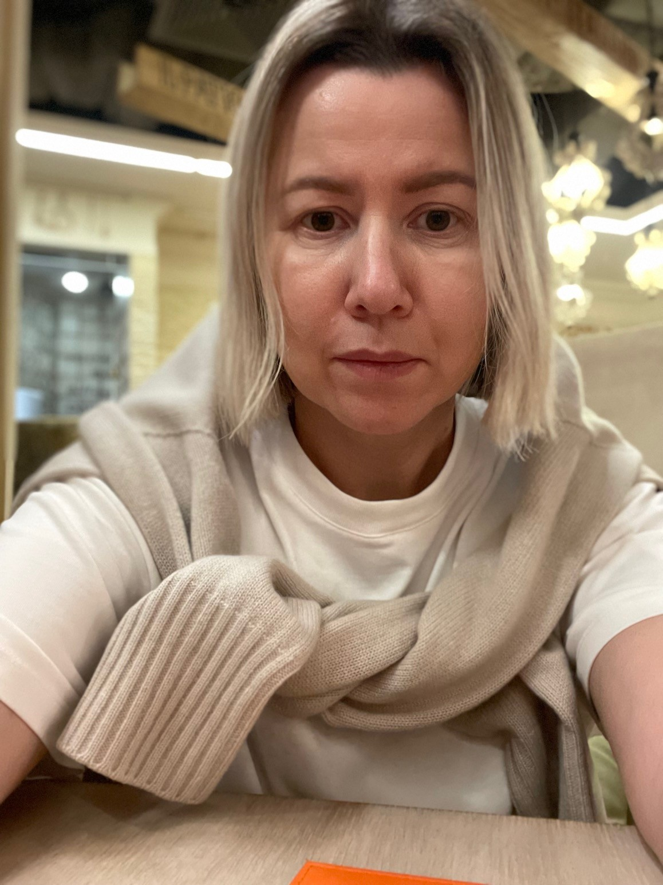

Помогаю амбициозным специалистам, которые устали от отказов, не понимают правил игры на рынке труда и не знают, с чего начать, выстроить карьерную стратегию и выйти на высокооплачиваемую позицию в России и за рубежом.
Без хаотичных рассылок, сотен откликов и проваленных собеседований.
На рынке труда проигрывают не только слабые специалисты. Часто проигрывают сильные, потому что действуют без системы.
Большинство специалистов концентрируются на резюме и откликах. Но рынок принимает решения не только на этом уровне.
Рынок оценивает не только опыт, но и то, как вы упакованы как профессионал. Что вы транслируете. На какой уровень претендуете. Как вас считывают работодатели.
Количество откликов не заменяет ясности. Без стратегии сильный специалист тратит месяцы на хаотичное движение и получает слабый результат.
У разных стран, сегментов и уровней свои правила. То, что работает в одном контексте, может полностью провалиться в другом.
Моя работа не про вдохновение и не про косметическую правку резюме. Она про систему, позицию и движение к следующему уровню.
На главной странице достаточно показать три варианта сотрудничества. Отдельные подстраницы можно добавить позже.
Для тех, кому нужна ясность, трезвый разбор ситуации и понимание следующего шага.
Точка входа в системную работу.
Глубокая работа для тех, кто хочет перейти на следующий уровень и перестать действовать вслепую.
Когда нужна не поддержка, а вектор.
Для тех, кто уже выходит на рынок или находится в активном переходе и хочет сопровождение по ключевым этапам.
Когда нужен партнёр на время перехода.
Главный результат моей работы. Не просто советы, а ясная стратегия, которая снижает хаос и усиливает позицию на рынке.

Я карьерный стратег с многолетним международным опытом. Работаю с сильными специалистами, которые хотят перестать быть просителями на рынке труда и занять более сильную профессиональную позицию.
Коротко о том, что обычно важно понять до начала работы.
Чаще всего недостаточно. Резюме. Это только один элемент. Без правильного позиционирования и стратегии оно не решает проблему целиком.
Нет. Работа возможна как с российским рынком, так и с международным контекстом. Всё зависит от вашей цели, опыта и текущей точки.
Лучше всего моя работа подходит сильным, амбициозным специалистам, у которых уже есть опыт, но нет ясной стратегии перехода на следующий уровень.
Лучше всего начать со стратегической консультации. Она помогает увидеть картину целиком и понять, какой формат работы нужен дальше.
Если вы устали от бессистемного поиска, отказов и ощущения, что рынок закрыт. Пришло время перейти от случайных действий к карьерной стратегии.